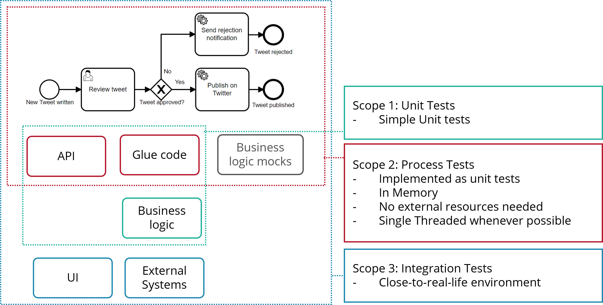
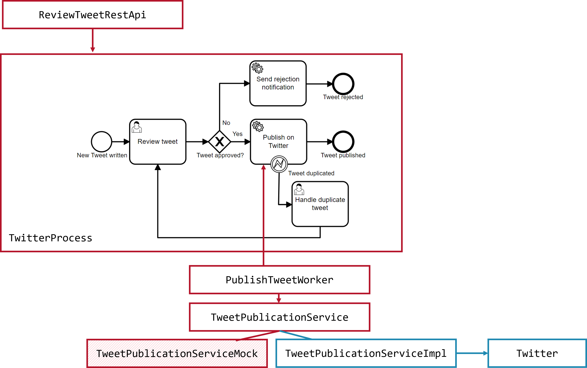

Testing process definitions
Test your executable BPMN processes as they are software. If possible, do automated unit tests with a fast in-memory workflow engine. Before releasing, verify with integration tests close to your real-life environment, which might include human-driven, exploratory integration tests.
This best practice uses the following process example:
1New tweets need to be reviewed before publication.
2The tweeting employee is notified about rejected tweets.
3Approved tweets get published.
4Duplicate tweets are rejected by Twitter and dealt with by the original author (e.g. rephrased) just to be reviewed again.
Testing scopes
There are basically three typical test scopes used when building process solutions:
-
Unit tests: Testing glue code or programming code you developed for your process solution. How to unit test your software itself is not discussed here, as this is a common practice for software development.
-
Process tests: Testing the expected behavior of the process model, including glue code and specifically the data flowing through the process model. Those tests should run frequently, so they should behave like unit tests (quick turnaround, no need for external resources, etc.)
-
Integration tests: Testing the system in a close-to-real-life-environment to make sure it is really working. This is typically done before releasing a new version of your system. Those tests include human-driven, exploratory tests.

Writing process tests in Java
This section targets Camunda 8. Refer to the specific Camunda 7 documentation if you are looking for Camunda 7.x.
This section describes how to write process tests as unit tests in Java. We are working on more information on how to write tests in other languages, like Node.Js or C#.
When using Java, most customers use Spring Boot. While this is a common setup for customers, it is not the only one. Find some more examples of Java process tests in the README.md of the zeebe-process-test project.
Technical setup using Spring
You need to use JUnit 5. Ensure you use JUnit 5 in every test class: the @Test annotation you import needs to be org.junit.jupiter.api.Test.
Spring Zeebe is a community-maintained project.
- Use JUnit 5 as unit test framework.
- Use spring-zeebe.
- Use
@ZeebeSpringTestto ramp up an in-memory process engine. - Use annotations from zeebe-process-test to check whether your expectations about the state of the process are met.
- Use mocking of your choice, e.g. Mockito to mock service methods and verify that services are called as expected.
A test can now look like the following example. The complete source code is available on GitHub:
@ZeebeSpringTest
class TestTwitterProcess {
@Autowired
private ZeebeClient zeebe;
@MockBean
private TweetPublicationService tweetPublicationService;
@Test
void testTweetApproved() throws Exception {
// Prepare data input
TwitterProcessVariables variables = new TwitterProcessVariables()
.setTweet("Hello world")
.setBoss("Zeebot");
// start a process instance
ProcessInstanceEvent processInstance = zeebe.newCreateInstanceCommand() //
.bpmnProcessId("TwitterDemoProcess").latestVersion() //
.variables(variables) //
.send().join();
// And then retrieve the UserTask and complete it with 'approved = true'
waitForUserTaskAndComplete("user_task_review_tweet", Collections.singletonMap("approved", true));
// Now the process should run to the end
waitForProcessInstanceCompleted(processInstance);
// Let's assert that it passed certain BPMN elements (more to show off features here)
assertThat(processInstance)
.hasPassedElement("end_event_tweet_published")
.hasNotPassedElement("end_event_tweet_rejected")
.isCompleted();
// And verify it caused the right side effects b calling the business methods
Mockito.verify(twitterService).tweet("Hello world");
Mockito.verifyNoMoreInteractions(twitterService);
}
}
Test scope and mocking
In such a test case, you want to test the executable BPMN process definition, plus all the glue code which logically belongs to the process definition in a wider sense. Typical examples of glue code you want to include in a process test are:
- Worker code, typically connected to a service task
- Expressions (FEEL) used in your process model for gateway decisions or input/output mappings
- Other glue code, for example, a REST API that does data mapping and delegates to the workflow engine
In the example above, this is the worker code and the REST API:

Workflow engine-independent business code should not be included in the tests. In the Twitter example, the TwitterService will be mocked, and the TwitterWorker will still read process variables and call this mock. This way, you can make test the process model, the glue code, and the data flow in your process test.
The following code examples highlight the important aspects around mocking.
The PublishTweetWorker is executed as part of the test. It does input data mapping (1) and also translates a specific business exception into a BPMN error (2):
@Autowired
private TwitterService twitterService;
@JobWorker( type = "publish-tweet")
public void handleTweet(@VariablesAsType TwitterProcessVariables variables) throws Exception {
try {
twitterService.tweet(
variables.getTweet() // 1
);
} catch (DuplicateTweetException ex) { // 2
throw new ZeebeBpmnError("duplicateMessage", "Could not post tweet, it is a duplicate.");
}
}
The TwitterService is considered a business service (it could, for example, wrap the twitter4j API) and shall not be executed during the test. This is why this interface is mocked:
@MockBean
private TwitterService tweetPublicationService;
@Test
void testTweetApproved() throws Exception {
// ...
// Using Mockito you can make sure a business method was called with the expected parameter
Mockito.verify(tweetPublicationService).tweet("Hello world");
}
@Test
void testDuplicate() throws Exception {
// Using Mockito you can define what should happen if a method is called, in this case an exception is thrown to simulate a business error
Mockito.doThrow(new DuplicateTweetException("DUPLICATE")).when(tweetPublicationService).tweet(anyString());
//...
Drive the process and assert the state
For tests, you drive the process from waitstate to waitstate and assert that you observe the expected process and variable states. For example, you might implement a test to test the scenario that a tweet gets approved:
@Test
void testTweetApproved() throws Exception {
// Prepare data input
TwitterProcessVariables variables = new TwitterProcessVariables()
.setTweet("Hello world")
.setBoss("Zeebot");
// start a process instance <1>
ProcessInstanceEvent processInstance = zeebe.newCreateInstanceCommand() //
.bpmnProcessId("TwitterDemoProcess").latestVersion() //
.variables(variables) //
.send().join();
// And then retrieve the UserTask and complete it with 'approved = true' <2>
waitForUserTaskAndComplete("user_task_review_tweet", Collections.singletonMap("approved", true));
// Now the process should run to the end
waitForProcessInstanceCompleted(processInstance);
// Let's assert that it passed certain BPMN elements (more to show off features here) <3>
assertThat(processInstance)
.hasPassedElement("end_event_tweet_published")
.hasNotPassedElement("end_event_tweet_rejected")
.isCompleted();
// And verify it caused the right side effects b calling the business methods <4>
Mockito.verify(twitterService).tweet("Hello world");
Mockito.verifyNoMoreInteractions(twitterService);
}
-
Create a new process instance. You may want to use some glue code to start your process (e.g. the REST API facade), or also create helper methods within your test class.
-
Drive the process to its next waitstate, e.g. by completing a waiting user task. You may extract boilerplate code into helper methods as shown below.
-
Assert that your process is in the expected state.
-
Verify with your mocking library that your business service methods were called as expected.
This is the helper method used to verify the workflow engine arrived in a specific user task, and complete that task with passing on some variables. A user task behaves like a service task with the type io.camunda.zeebe:userTask:
public void waitForUserTaskAndComplete(String userTaskId, Map<String, Object> variables) {
// Let the workflow engine do whatever it needs to do
inMemoryEngine.waitForIdleState();
// Now get all user tasks
List<ActivatedJob> jobs = zeebe.newActivateJobsCommand().jobType(USER_TASK_JOB_TYPE).maxJobsToActivate(1).send().join().getJobs();
// Should be only one
assertTrue(jobs.size()>0, "Job for user task '" + userTaskId + "' does not exist");
ActivatedJob userTaskJob = jobs.get(0);
// Make sure it is the right one
if (userTaskId!=null) {
assertEquals(userTaskId, userTaskJob.getElementId());
}
// And complete it passing the variables
if (variables!=null) {
zeebe.newCompleteCommand(userTaskJob.getKey()).variables(variables).send().join();
} else {
zeebe.newCompleteCommand(userTaskJob.getKey()).send().join();
}
}
Be careful not to "overspecify" your test method by asserting too much. Your process definition will likely evolve in the future and such changes should break as little test code as possible, but just as much as necessary!
As a rule of thumb always assert that the expected external effects of your process really took place (e.g. that business services were called as expected). Additionally, carefully choose which aspects of internal process state are important enough so that you want your test method to warn about any related change later on.
Testing your process in chunks
Divide and conquer by testing your process in chunks. Consider the important chunks and paths the Tweet Approval Process consists of:
1The happy path: The tweet just gets published.
2The tweet gets rejected.
3A duplicated tweet gets rejected by Twitter.
Testing the happy path
The happy path is kind of the default scenario with a positive outcome, so no exceptions or errors or deviations are experienced.
Fully test the happy path in one (big) test method. This makes sure you have one consistent data flow in your process. Additionally, it is easy to read and to understand, making it a great starting point for new developers to understand your process and process test case.
You were already exposed to the happy path in our example, which is the scenario that the tweet gets approved:
@Test
void testTweetApproved() throws Exception {
// Prepare data input
TwitterProcessVariables variables = new TwitterProcessVariables()
.setTweet("Hello world")
.setBoss("Zeebot");
// start a process instance <1>
ProcessInstanceEvent processInstance = zeebe.newCreateInstanceCommand() //
.bpmnProcessId("TwitterDemoProcess").latestVersion() //
.variables(variables) //
.send().join();
// And then retrieve the UserTask and complete it with 'approved = true' <2>
waitForUserTaskAndComplete("user_task_review_tweet", Collections.singletonMap("approved", true));
// Now the process should run to the end
waitForProcessInstanceCompleted(processInstance);
// Let's assert that it passed certain BPMN elements (more to show off features here) <3>
assertThat(processInstance)
.hasPassedElement("end_event_tweet_published")
.hasNotPassedElement("end_event_tweet_rejected")
.isCompleted();
// And verify it caused the right side effects b calling the business methods <4>
Mockito.verify(twitterService).tweet("Hello world");
Mockito.verifyNoMoreInteractions(twitterService);
}
Testing detours
Test forks/detours from the happy path as well as errors/exceptional paths as chunks in separate test methods. This allows to unit test in meaningful units.
The tests for the exceptional paths are basically very similar to the happy path in our example:
@Test
void testRejectionPath() throws Exception {
TwitterProcessVariables variables = new TwitterProcessVariables()
.setTweet("Hello world")
.setBoss("Zeebot");
ProcessInstanceEvent processInstance = zeebe.newCreateInstanceCommand() //
.bpmnProcessId("TwitterDemoProcess").latestVersion() //
.variables(variables) //
.send().join();
waitForUserTaskAndComplete("user_task_review_tweet", Collections.singletonMap("approved", false));
waitForProcessInstanceCompleted(processInstance);
waitForProcessInstanceHasPassedElement(processInstance, "end_event_tweet_rejected");
Mockito.verify(twitterService, never()).tweet(anyString());
}
and:
@Test
void testDuplicateTweet() throws Exception {
// throw exception simulating duplicateM
Mockito.doThrow(new DuplicateTweetException("DUPLICATE")).when(twitterService).tweet(anyString());
TwitterProcessVariables variables = new TwitterProcessVariables()
.setTweet("Hello world")
.setAuthor("bernd")
.setBoss("Zeebot");
ProcessInstanceEvent processInstance = zeebe.newCreateInstanceCommand() //
.bpmnProcessId("TwitterDemoProcess").latestVersion() //
.variables(variables) //
.send().join();
waitForUserTaskAndComplete("user_task_review_tweet", Collections.singletonMap("approved", true));
waitForProcessInstanceHasPassedElement(processInstance, "boundary_event_tweet_duplicated");
// TODO: Add human task to test case
waitForUserTaskAndComplete("user_task_handle_duplicate", new HashMap<>());
}
Integration tests
Test the process in a close-to-real-life environment. This verifies that it really works before releasing a new version of your process definition, which includes human-driven, exploratory tests.
Clearly define your goals for integration tests! Goals could be:
- End user & acceptance tests
- Complete end-to-end tests
- Performance & load tests, etc.
Carefully consider automating tests on scope 3. You need to look at the overall effort spent on writing test automation code and maintaining it when compared with executing human-driven tests for your software project's lifespan. The best choice depends very much on the frequency of regression test runs.
Most effort is typically invested in setting up proper test data in surrounding systems.
Configure your tests to be dedicated integration tests, and separate them from unit or process tests.
You can use typical industry standard tools for integration testing together with Camunda.